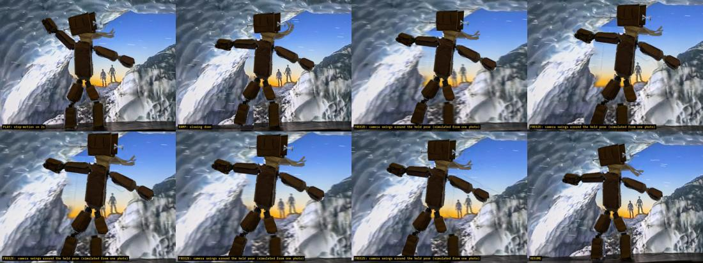
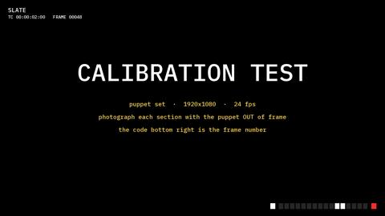
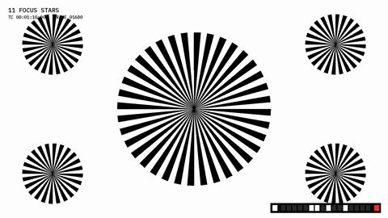
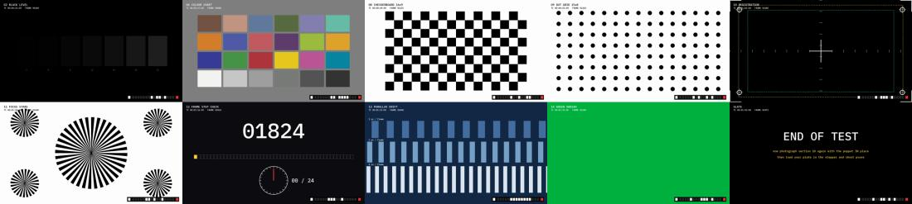
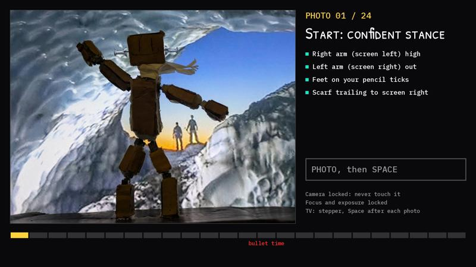
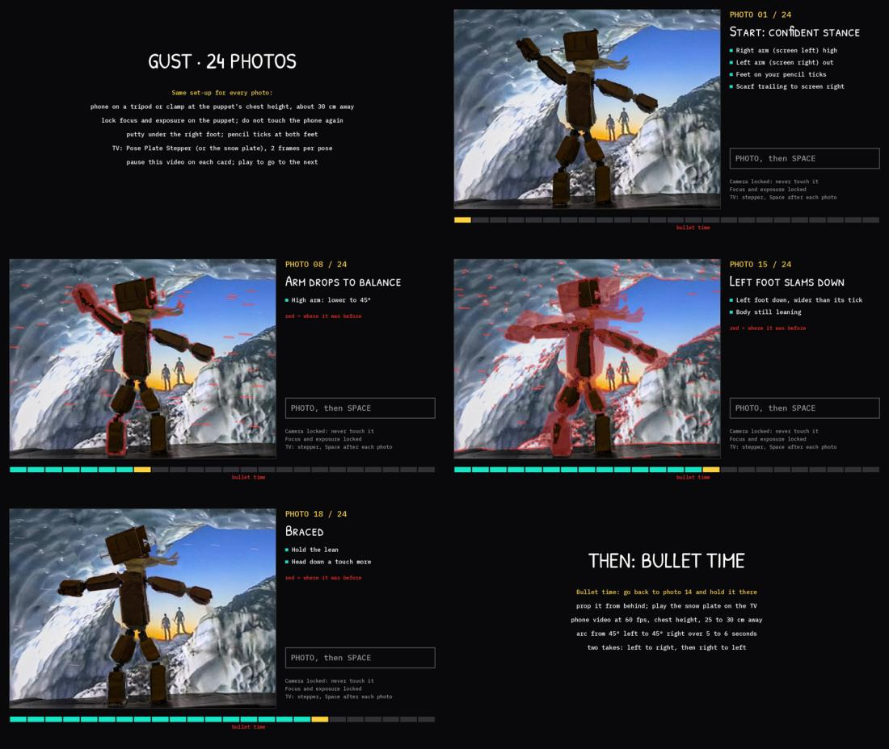
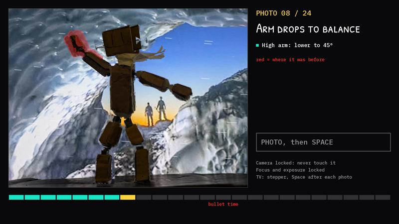
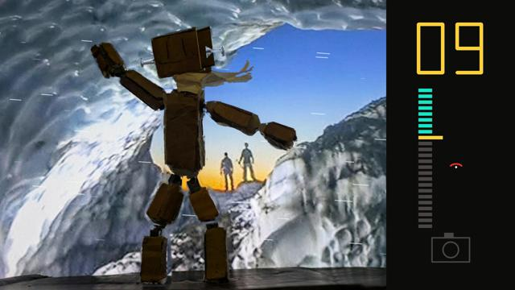
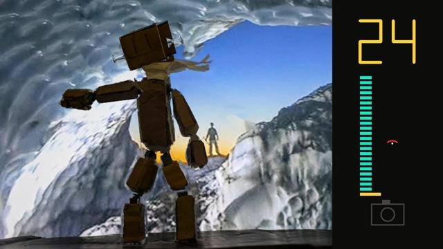
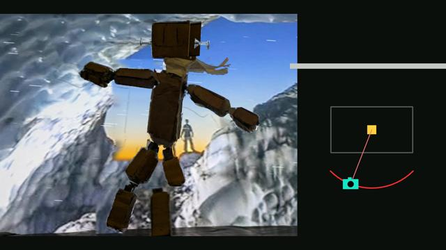

TSU-02 · case 3 of 11 · This Side Up
The shooting kit
Can the set tell the person with the camera what to do, without a paragraph of instructions?
A bullet-time mock-up from one photograph, a calibration reel for the TV behind the set, and a pose guide in two versions: with words, then without.
How it was made
- Fake the orbit first from one photograph, and label it as a simulation.
- Make a calibration reel for the TV: 18 sections, each frame carrying its own 16-bit code.
- Make a pose guide with one card per photo: the target pose, the change in red, the moves in words.
- Remake it without words: the move plays, the moved part is outlined, a shutter flash says take it.
What this case teaches
- A frame code on the TV ties any photo of the set to the exact background frame.
- The second guide removes the text and keeps the information.
How it differs. The first case made the film from photos already taken. This one plans the photos.
Versions, in order
Every cut that was rendered, oldest first, with what changed from the one before. Videos are 640 px web encodes.
-
01
Bullet-time mock-up
Oct 18 01:49 · 0:11Play, ramp to slow motion, freeze, swing the camera, resume. One photograph has one viewpoint, so the swing is layered parallax.
-
02
Calibration reel
Oct 18 02:05 · 1:46Black levels, white, 18% grey, a grey wedge, a colour chart, bars, a checkerboard, a dot grid, registration marks, focus stars, a frame-step check, a parallax drift, green, blue. Section 10 again at the end, with Boone in place.
-
03
Pose guide, with words
Oct 18 02:49 · 2:4224 photo cards for the gust: target pose, the change tinted red, the moves to make, the fixed camera rules.
-
04
Pose guide, wordless
Oct 18 04:42 · 2:12The move plays, the moved part is outlined, a counter shows the photo number, and the camera icon flashes.
The sheets, step by step
Grouped by stage of the work, with the time each file was written. Click any sheet to see it full size; the arrow keys move through them.




















What broke and what changed
- The first guide was cards of text: moves to make and camera rules.The wordless guide shows the move and outlines what moved.
- A mock-up orbit from one photo can only slide layers past each other.Labelled a simulation; the real orbit is case TSU-04.
Read the record
Carried forward
Every photo session after this was shot with the guide on a second screen.